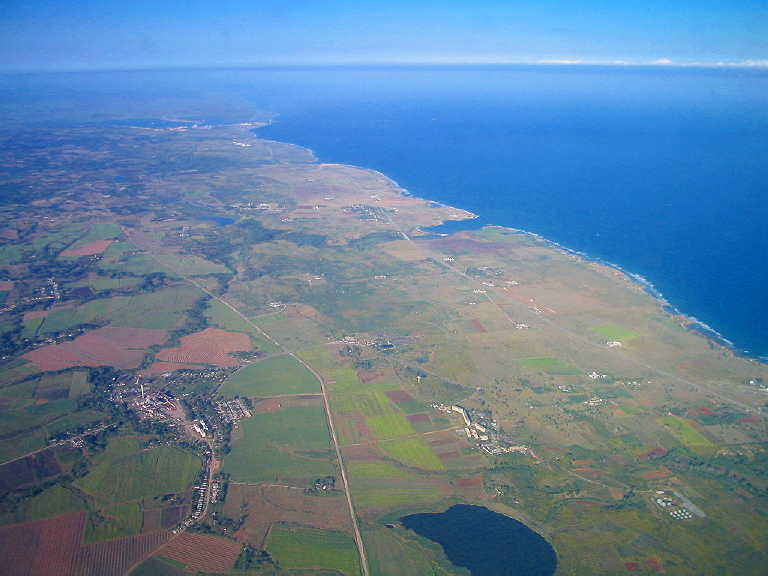
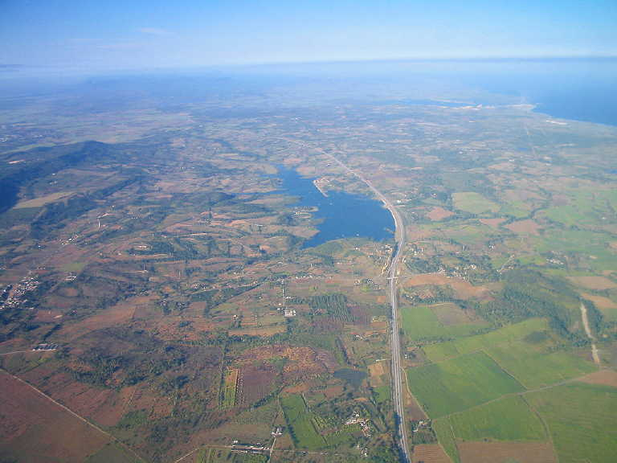
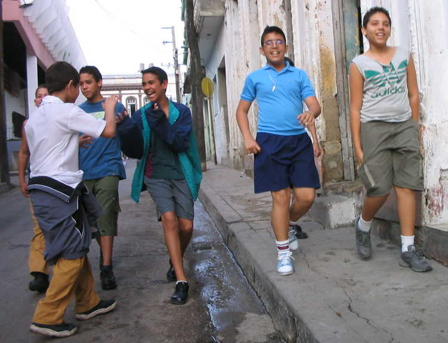
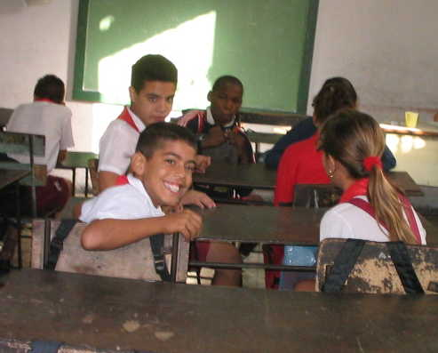
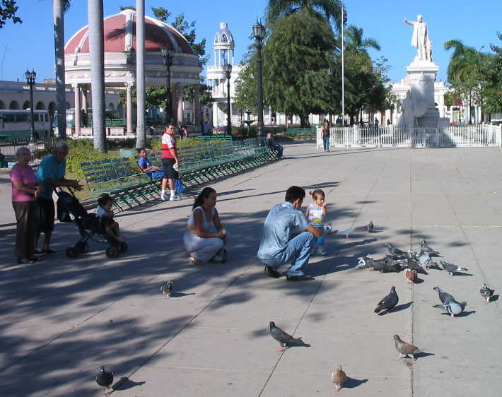
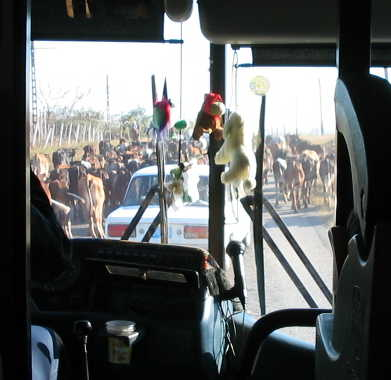
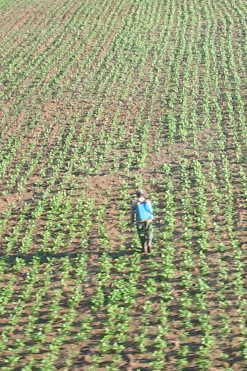
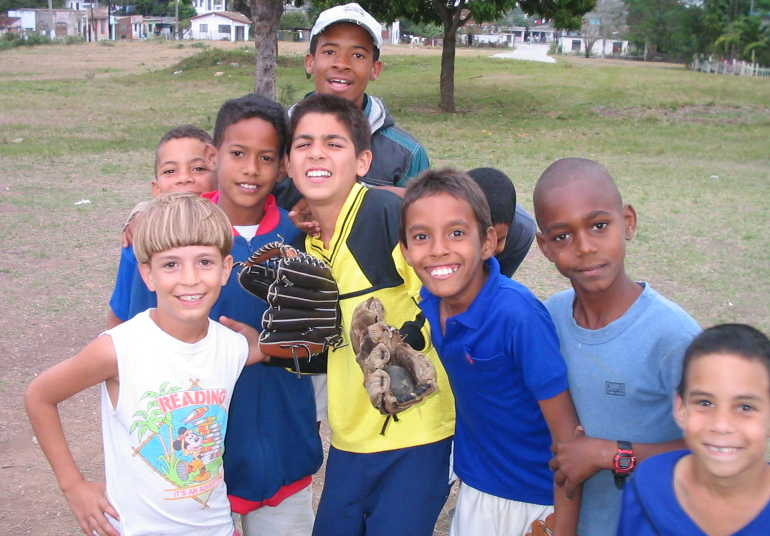
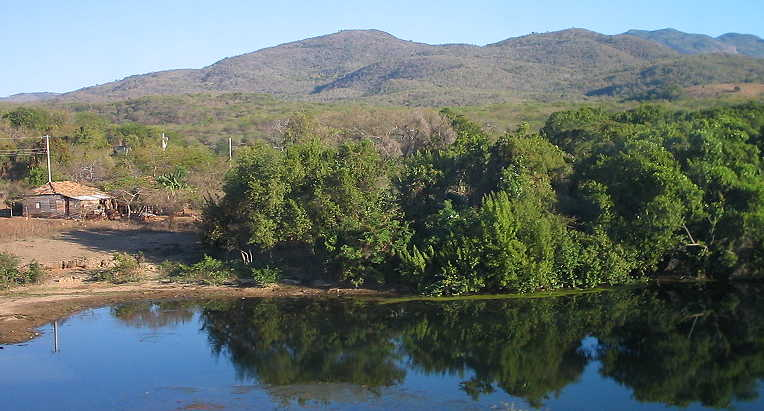

Cuba
2004
(Other photographs)
(All photos copyrighted by Richard Smith. Non-commercial use ok with approval and attribution.)

Landscape west of Havana, taken from the plane flying in from Miami

Landscape west of Havana, taken from the plane flying in from Miami

Santa Clara

Santa Clara schoolroom
Books in Santa Clara library

Square in Cienfuegos
 |

Heavy traffic between
Trinidad and Cienfuegos
|

|

Ball players near Santa Clara.

Landscape between Trinidad
and Cienfuegos
jewishcuba.org main photo page
Photo pages sponsored by www.jewishcuba.org